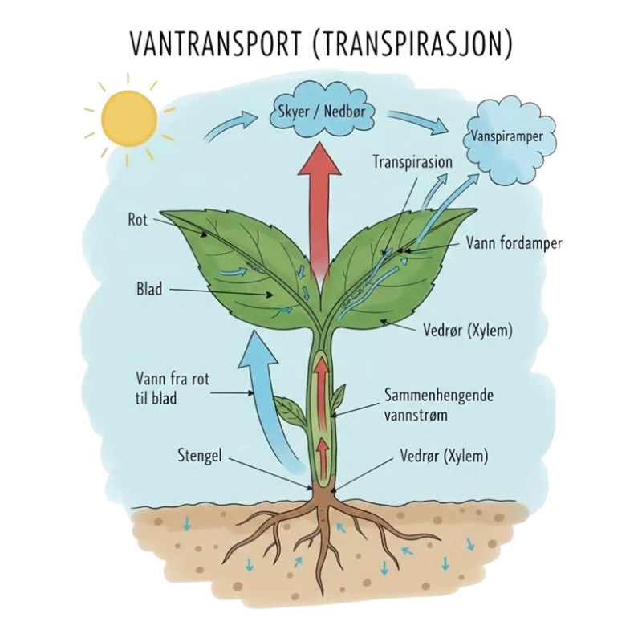
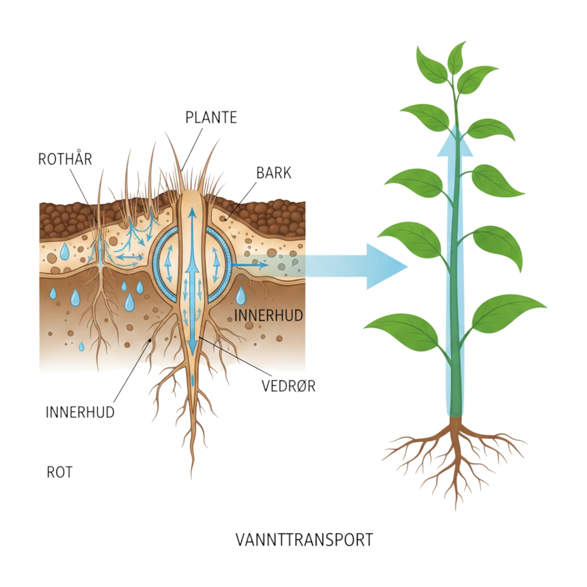

Vanntransport er prosessen der planter frakter vann og mineraler fra røttene til bladene. Dette er nødvendig for fotosyntese, vekst og for å holde planten stiv og oppreist.
URL: Ilustrasjon av Vanntransport
Rothårene: Vann tas opp i røttene gjennom rothår. Her kommer vannet inn ved osmose, sammen med oppløste mineraler fra jorda.
Barken: Vannet beveger seg videre gjennom barken, enten gjennom cellene eller mellom dem.
Innerhud: Innerhuden, som inneholder suberin i celleveggene, fungerer som en barriere som kontrollerer hvor mye vann og mineraler som slipper inn i ledningsvevet (xylemet). Vannet må passere gjennom cellene her, noe som sikrer at planten kan regulere opptaket.
Vedrør: Vedrørene (xylemet) frakter vannet og mineralene fra røttene opp gjennom stengelen og ut til bladene. Transporten skjer hovedsakelig ved hjelp av kapillærkrefter
URL: Ilustrasjon av Vannets kretsløp
Kapillærkrefter: Kraften som får vann til å stige i tynne rør, som i plantens xylem. Inkluderer Adehosjon- og Kohesjonskrefter
Følgende krefter kan du lese mer om i våre artikler om Kapillærkrefter, Transpirasjon og Rottrykk
Hva transporteres i xylemet i planten?
Hva driver vanntransporten oppover i planten?